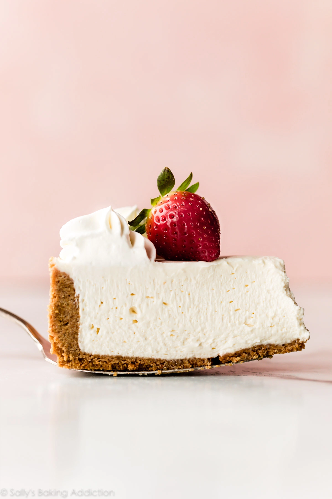

CheeseCake

This is truly the most perfect and easy no-bake cheesecake. By following this no-bake cheesecake recipe, you’ll be gifted with a smooth and creamy dessert that sets up beautifully in the refrigerator. Unlike regular cheesecake, no-bake cheesecake isn’t overly heavy. It’s lightly sweet and perfectly refreshing!
Ingredients
Graham Cracker Crust
- 2 cups (200g) graham cracker crumbs (about 12–14 full sheet graham crackers)
- 1/3 cup (67g) packed light or dark brown sugar
- 1/2 cup (8 Tablespoons; 115g) unsalted butter, melted
Cheesecake
- 1 and 1/4 cups (300ml) heavy cream or heavy whipping cream
- three 8-ounce blocks (680g) full-fat cream cheese, softened to room temperature
- 1/2 cup (100g) granulated sugar
- 2 Tablespoons (15g) confectioners’ sugar
- 1/4 cup (60g) sour cream, at room temperature
- 2 teaspoons lemon juice
- 1 teaspoon pure vanilla extract